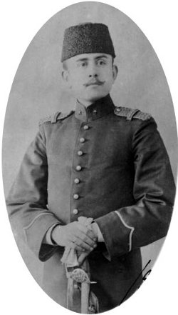

1903’te (1319) biz Erkân-ı Harbiye Mektebi birinci sınıfında iken Trakya’da ve hususiyle Makedonya’da büyük Bulgarların ihtilaller yaptığını duyduk. Kardeşim bu esnada Selanik’te Merkez Kumandanlığı’nda idi. Sonra da ihtilalcilerin muhakemesini yapan Divan-ı Harb-i Örfî’de bulunmuştu. Sonra da Manastır’a tayin olunmuştu. Kesriye taraflarında takibatta da bulunmuştu. Ben büyük bir merakla bu yıl tatil devresinde onun yanına gitmek imkânını buldum. Selanik’te ve Manastır’daki hadiseleri yerlerinde kardeşimden ve arkadaşlarımızdan dinledim. Hülasa olarak hadisenin seyri şöyle: 28 Nisan 1903’te (15 Nisan 1319) Selanik limanından Marsilya’ya hareket etmek üzere bulunan “Messagerie Maritime” kumpanyasının Guadelquiver Vapuru’nda bir cehennem makinesi ile bir infilak vuku bulmuş. Vapur henüz hareket etmemiş olduğundan insan ve eşya kurtarılmış fakat bu koca vapur yanmış. Aynı günün akşamı İstanbul’dan gelen yolcu trenine de suikast yapılmış. Burada da insan zayiatı olmamış. Ertesi gün ortalık tamamıyla karardıktan sonra Selanik şehri birdenbire karanlık içinde kalmış. Bulgarlar havagazı ve su borularının geçtiği bir köprüyü dinamitle havaya uçurmuşlar. Bunu müteakip Osmanlı Bankası havaya uçurulmuş, yanındaki Alman Kulübü ve Kolombo Oteli ve yakın binalar da hasara uğramış. Şehir içinde Bulgar komitecileri sokaklarda ve evlerden bombalar atmaya başlamışlar. Şehirdeki isyan bastırılmış. İki gün sonra İtalya ve Avusturya harp gemileri Selanik limanına gelmiş.
Osmanlı Bankası’nın altına iki yıldan beri tünel kazıldığı tespit olunmuş. Tünelin ucu bir bakkal dükkânındadır. Kimsenin haberi bile olmamış. Bu hadiselerden birkaç ay sonra da Trakya ve Makedonya ihtilalleri başlamış. Bunun tarihi de Bulgarların İlinden ve Hıristiyanların da Sent Eli [St. Elias] dedikleri gün olan 2 Ağustos 1903’te (20 Temmuz 1319) vuku bulmuş.[14] Manastır Rus konsolosunun bir jandarmamız tarafından katli de bundan az sonradır.
Ben Selanik ve Manastır’da hadise yerlerini hayret ve ibretle dolaştım. 1896’dan (1312) beri bu ihtilal fikren ve fiilen hazırlanmış. Rus konsolosları himayesinde Rus erkân-ı harpleri ve siyaset adamları muhtelif nam ve kıyafetle köy köy dolaşarak köylüye, “Türk boyunduruğundan kurtulmak lüzumunu ve nasıl kurtulacaklarını ve nasıl himaye göreceklerini” anlatıyorlar. Bir taraftansa Sofya mekteplerinde tahsil görmüş Makedonyalı veya Bulgaristanlı gençler köy mekteplerine gelip öğretmen oluyorlar ve halkı ihtilale hazırlamaya uğraşıyorlar. Parola, “Makedonya Makedonyalılarındır”. İlk hedef muhtariyet, sonrası da istiklal.

Kâzım Karabekir. Erkân-ı harbiye birinci sınıf, 1903
Bizim Yunan Harbi esnasında her şey mükemmelen hazırmış. Hatta bundan iki yıl önce hükümet bu hazırlığı duyarak bazı depolar ele geçirmiş. Sonraları büyük ihtilale kadar çete faaliyetleri olmuş. 138 müsademede eşkıyadan ve askerden hayli zayiat da olmuş. 1902 (1318) Teşrinievvel’de (yani biz Harbiye son sınıftan zabit çıkmak üzere imtihan olurken) Rusya, Babıâli’yi kâfi ıslahat yapmak için sıkıştırmış. Sultan Hamid de Hüseyin Hilmi Paşa’yı müfettiş-i umumi tayin etmiş. Vilayetlerin idari ve adli vesair işlerine müfettişlik bakacak. Fakat buna verilen talimatı kâfi görmeyen Rusya, Avusturya’yı beraberine alarak mufassal bir proje yapmışlar ve Berlin Muahedesi’ni imzalayan büyük devletlere de kabul ettirdikten sonra Babıâli’ye vermişler. En mühim noktaları: “Polis ve jandarmanın tensiki için ecnebi mütehassıslar istihdamı, nüfus nispetinde Hıristiyanlardan da polis ve jandarma alınması, ekseriyeti Hıristiyan olan köylerin kır bekçilerinin Hıristiyan olması.”
Bunları hükümet kabul ediyor fakat silah toplamaya gelince Bulgarlar vermiyor. İş ihtilale kadar gidiyor. Bulgarların ezildiğini gören Rusya imparatoru, Avusturya imparatoruyla Mürzsteg’de (Viyana’nın 90 kilometre kadar cenub-ı garbında bir kasaba) buluşuyor ve 9 maddelik bir program yaparak büyük devletlere tasdik ettirdikten sonra Babıâli’ye veriyorlar. 7 Kânunuevvel 1903’te (24 Teşrinisani 1319) Babıâli de bunu kabul ediyor. Tatbiki için de henüz emir gelmişti, iş mahrem tutuluyordu. Bunun manası Makedonya’nın muhtariyetine yol açmaktı.
***
Benim bu seyahatimde gördüğüm yeisli bir şey de ordunun tabur kumandanlarından başlayarak yukarıya doğru alaylı veya işe yaramaz ellerde bulunuşu idi. Manastır’da Kırmızı Kışla’da birkaç sınıf arkadaşımla hasbıhal ederken tabur kumandanları alaylı binbaşı birdenbire odaya girdi ve aynen şöyle söyledi:
— Mektepliler, ne konuştuğunuzu ben biliyorum. Bizim binbaşı eşeğin biri diye beni çekiştiriyorsunuz!
Fakat mektepli zabitlerimiz kıymetli amir ve mürşitlerden mahrum olduklarından sarhoşluk fena bir şekilde. Bir gece kışlaya gelirken konsolosların ikamet yerleri olan caddede iki mektepli sarhoş zabitin kavgasına rastladık. Biri palasını çekti. Arkadaşlardan biri cinayeti önlemek için aralarına atıldı fakat parmakları doğrandı, öteki sarhoş da ayrıldıktan sonra roverini çekerek rastgele ateşe başladı. Kışladan da yine bir hadise var diye nizam karakolu fırladı çıktı. Biz kışlaya yatmaya geliyorduk. Hadiseyi anlatarak herkesi teskin ettik. Parmakları sarkan arkadaşa doktor getirttik. Bu halden çok teessür duydum. Erkân-ı harp zabitleri İstanbul’da, Selanik’te dairelerde toplanıyorlardı. Gerçi 1899’dan (1315) beri kıtalarda iki yıl staj kabul olunmuştu. Fakat hâlâ birçokları kıtalara gelmiyordu. Asıl işin daha vahim ciheti bu yıl istibdal efradı toptan zabit yapılarak bu mıntıkada bırakılmış. Sebebi gidip memleketlerinde Bulgar ihtilalini anlatamasınlar imiş! İçlerinde üniformasının şerefini muhafaza edemeyecek derecede aptallar da var. Bunlardan birini Selanik’te sinemada çok çirkin vaziyette görerek ordu erkân-ı harbiyesine şikâyet ettim.
Kardeşimle Manastır’daki hasbıhallerimde İttihat ve Terakki Cemiyeti hakkında biraz malumat vererek hiç gizli herhangi bir Türk cemiyetiyle temasa gelip gelmediğini ve bu ihtilaller içinde Türk köylüsünün ve Türk münevverlerinin, hususiyle mektepli zabitlerin hallerini ve düşüncelerini sormuştum. Aldığım cevap şu oldu:
— Halkın korku ve heyecanda olduğu ve bu felâketin çok geçmeden buraların istilaya uğrayacağı korkusu umumidir. Bulgarların gerisinde büyük devletler ve bilhassa Rusya ve Avusturya vardır. Mektepli zabitler bir araya gelince apaçık her şeyi konuşuyoruz, fakat hafiye dolu. Tanımadığınız birinin yanında ileri geri söylemek çok tehlikeli. Mesela bizim sınıftan Mülazım Beşiktaşlı İsmail Hakkı ile Salih, konsolosun vurulduğu gün gazinoda bilardo oynuyorlardı. Hadiseyi işitince, “İyi oldu, oh olsun kerataya. Nöbetçiye tokat nasıl olurmuş görsünler” diye birbiriyle hasbıhal ederken bir hafiye işitmiş jurnal etmiş. Hemen tevkif ettiler, Selanik’e götürdüler. Hâlâ da Tophane’de mevkufturlar. Gizli hiçbir cemiyet işitmedim.
***
Küçük yaşlarımdan beri Şark vilayetlerinde, Arabistan’da uzun seyahatler yapmış olmak ve küçük yaşta babamı kaybettiğimden hayatla mücadele zaruretinde kalmak beni çok pişirmişti. Fakat bu Manastır ve Selanik seyahati esnasında gördüklerim ve esasen de siyasi vaziyetimiz hakkında küçükten kulaklarımın dolgunluğu bana genç yaşımda büyük bir muhakeme kuvveti veriyordu. Zaten küçükten ataklığım vardı. Mektep sıralarında da medeni cesaretim kırılmamış, artmıştı. Bunun için Selanik’te ilk işim bu iki kabahatsiz sınıf arkadaşımı ziyaret etmek ve onları kurtarmak oldu. Kimseden izin almadan bunların mevkuf bulunduğu yere geldim. Dışarı çıkarttım. Hemen doğruca mabeyne acı yazmalarını ve benim de ordu erkân-ı harbiyesine vaziyeti anlatacağımı söyledim. Ve bunları felâketten kurtardım.
***
İstanbul’a trenle döndüm. Bu seyahatten çok feyz almıştım. Artık gerek ağabeyime ve gerekse sınıf arkadaşlarımdan yakınlarıma çok şeyler anlatabiliyordum. Hususiyle erkân-ı harp sınıflarına da Harbiye sınıfları gibi yoklamaya çıkma vesaire gibi tazyikler başladığından bunun aksi tesiri olarak bizlerde de kin ve nefret artıyordu.
10 Şubat 1904’te (28 Kânunisani 1319) Japonlarla Ruslar arasında harp açılması hepimize nefes aldırdı. Hele ben ayrı bir sevinç duyuyordum. Çünkü Makedonya meselesi sürüncemede kalacaktı ve biz nasıl olsa diploma alarak o davada hazır bulunuruz diyordum.
Sınıfımın en ilerisinde bulunduğum gibi iç ve dış siyasi vaziyetlerimizi en iyi bilen de bendim. Sınıf arkadaşlarımdan Seyfi [Düzgören] Firuzağa (General), Sadullah [Güney] Galata [Seyr-i Sefain Müdürü, Mebus], Emin [Koral] Halıcıoğlu [General] siyasi hasbıhallerde en yakınlarımdı. Sultan Hamid idaresinin bizi nerelere sürüklediğini görüşürdük. Bir de Jeunes gens parolası yaptım. Şüpheli biri geldi mi gören bunu söylerdi. Derhal laf değiştirirdik. Bu parolayı Petit Parisien resimli mecmuada görmüştüm. Her tarafta hafiyelerin kulak kabarttığını gösteriyor ve altında, “Jeunes gens, prenez garde aux choses que vous dites!” (Gençler, söylediğiniz şeye dikkat ediniz!) yazıyordu.
Bu parola, bizim dörtlü cemiyetimizin adeta ismi oldu. Benim seneye yine Makedonya’ya kardeşimin yanına sılaya gitmek kararında oluşuma arkadaşlar da seviniyordu. Çünkü taze görgü ve havadislerle gelecektim. Haftaları izinli çıktığım zaman Beyazıt Kütüphanesi’ne gider ve kendi tarihimizi ve Osmanlı camiasından milli ayrılıklar nasıl başladı, nasıl seyrini takip etti ve şimdi ne haldedir tekrar tekrar bulabildiğim kadarını okuyordum. Evde de ağabeyimle bu esasta hasbıhallerde bulunuyordum.
Bizim sınıfta bir düzine Şamlı ve Bağdatlı vardı. Yazık ki bunların arasında Araplık cereyanları ve Türk düşmanlığı apaçık görülüyordu. Biraz Arapça anladığım için aralarındaki bu kabil konuşmaları anlıyor ve çok müteessir oluyordum. Zavallı Türk, her vatandaş bizim mahvımızı istiyor diyerek ben de gün geçtikçe Türkten başkasına düşman oluyordum. Bu hususta bizim “jön jan” arkadaşlarımla da dertleşiyor ve Araplık cereyanından anlayabildiklerimi onlara da söylüyordum.
***
Kardeşim Selanik’te Onyedinci Nişancı Taburu’na nakletmişti. Tatil zamanını üçüncü sınıfa geçtiğimiz 1904’te (1320) dahi kardeşimin yanına gitmeye muvaffak oldum. “Jön jan” arkadaşlarımdan Emin Halıcıoğlu, akrabasından Selanik’teki Erkân-ı Harp Kolağası Cemal Bey’e (İttihat ve Terakki erkânından Bahriye Nazırı Cemal Paşa) büyücek bir gümüş ayna hediyeyi benimle gönderdi. Bu suretle Selanik’te onunla da tanıştım. Ve ahval hakkında hayli malumat aldım. Ben de geçen yıl Manastır’da ve Selanik’te gördüklerimi ve ordunun zayıf vaziyetini ve istikbalin tehlikeli olduğu hakkındaki düşüncelerimi söyledim. Ve Japonların Ruslara taarruza başlamasının felâketimizi geciktireceğini ve Japonların galebesinden emin olduğumu anlattım. Yalnız bizde hiçbir teşkilat olmadığı halde gayr-i Türklerin cemaat ve komite teşkilatı çok kuvvetli olduğunu, Nişancı Taburu kumandanının bile alaylı olduğunu, bunların ne vaziyetle ne de talim ve terbiye ile alakaları olmadığını, genç zabitlerimizin de gayr-i Türk evlerinde pansiyon olduklarının zararlarını anlattım ve bu hususta hasbıhallerde bulunduk. Cemal Bey de benden İstanbul ve mektep hakkında sualler sordu. Sınıf birinciliğimi mütemadiyen muhafaza ettiğimi tebrik ve daha tahsil esnasında bu havaliye gelip gitmekle çok iyi yaptığımı takdir etti. Bu orduda hizmet arzumdan da çok memnun kaldı.
Cemal Bey’le görüşmelerimde Selanik’te hiçbir askeri veya sivil gizli bir cemiyet olmadığı kanaatim kuvvetlendi. Çünkü geçen yıl kardeşime ricam üzerine onun da bir yıllık araştırması menfi netice vermişti. Bunun gibi Umumi Müfettişlik Erkân-ı Harbi İsmail Hakkı Bey ile (General Cafer Tayyar’ın kardeşi) temasımdan da netice buna varmıştı.
Makedonya’da Bulgarlardan başka Rumlar ve Sırplar da çeteler teşkil etmişlerdi. Her millet kendi mıntıkasını genişletmekle meşguldü. Her birinin gerisinde kendi ırkından bir küçük devlet ve bunların da gerisinde bir veya birkaç Avrupa büyük devleti vardı. Türklerin ise milli hiçbir teşekkülü yoktu. Bunları ancak Türk askeri muhafaza ediyordu. Selanik, Manastır, Üsküp vilayetlerinde Bulgar çeteleriyle müsademeler devamda idi. Eşkıya takibiyle uğraşmak üzere avcı taburları teşekkül etmişti. Askeri mıntıka müfettişlikleri ihdas olunuyordu.
Jandarmamızı tensike İtalyan Feriki Dejorgie Paşa tayin olunmuş. Manastır vilayeti jandarmasını İtalyanlar, Serez’inkini Fransızlar, Selanik’inkini Ruslar, Drama’nınkini İngilizler, Üsküp’ünkini de Avusturyalılar tensik ediyormuş!
Bunların bir kısmı bizim üniformayı, bir kısmı da kendi üniformalarını taşıyor. Bu zabitler evvelce Girit’te de bulunmuşlar! Yani gidecekleri yolu öğrenmiştirler. Umumi Müfettiş Hüseyin Hilmi Paşa’nın maiyetinde Rusya ve Avusturya sivil memurları da dolu.
Üçüncü Ordu ecnebi kontrolünde olduğundan maaşlarını tamamıyla alabiliyorlardı. Edirne’den gelenlerden şu faciayı öğrendim: Marko adında bir Yahudi, zabitlerin ve memurların maaşlarını yüzde 20-80 arasında kırıyormuş. Maaş sahipleri resmi olarak dört ayda bir maaş alıyorlarmış. Ramazan Bayramı’nda yarım maaş, Kurban Bayramı’nda diğer yarısı veriliyormuş!
***
Bu yıl gördüklerim ve öğrendiklerim daha dolgundu. Ve beni çok olgunlaştırmıştı, İstanbul’a dönüşümde samimi muhitimi daha çok aydınlatabiliyordum. Rus-Japon Harbi hakkındaki neşriyatı da merakla takip ediyordum. Tünel’in üst başında her zaman kitap aldığım bir Rum kitapçıdan güzel resim ve krokileri havi bir Illustration aldım ve birçok kitaplara da baktım. Yanımda Seyfi de vardı. Girerken sınıf yüzbaşılarımızdan Halil Efendi kitapçının camekânına bakıyordu. Bizim içeri girdiğimizi gördüğü halde bize bir şey söylememişti. Fakat çıktıktan sonra bizi takip etti ve Tünel meydanında karşımıza geçerek:
— Üzerinizi arayacağım, sizde evrak-ı muzırra var! dedi.
Tafsilatını Hayatım’da anlattığım çekişmeden sonra tabii zabit üniformasıyla üzerimizi aratmadık ve adama hakaret ettim. Çünkü kıyafeti de hizmetçi gibi idi. Bunu yüzüne haykırdım.
Meğer Tünel başındaki kütüphanelere girmek irade-i seniye ile (!) men edilmiş. Ben sılada bulunduğumdan haberim yoktu. Seyfi’nin de (Düzgören-General) bu iradenin tebliğinden haberi olmamış.
Sınıf zabitimiz bizi jurnal etmiş. Mektep Nazırı Rıza Paşa mektepte bizi çağırdı ve irade-i seniye ile men edilen kütüphaneye gidip öteberi alan bunlar mı, diye haykırmaya başladı. Ben sılada idim, haberim yok deyince döndü sınıf zabitimize ve bizi huzurundan kovdu! Ona küfürler etti. Biz kurtulduk zannıyla sevinirken dörder hafta izinsizlikle ceza gördük.
***
İsmet Aksaray (İnönü) da bizim “jön jan” grubunun samimi bir uzvu olmuştu. Bizim altımızdaki sınıftan olmasına rağmen akşamları içtimalarımıza gelirdi. Benim Makedonya seyahatlerim ve halimiz istikbalimiz hakkındaki anlatmalarıma Seyfi de birtakım kitaplar getirirdi. Bunları bazen ayrı ayrı okur, bazen birkaçımız beraber okurduk.
Erkân-ı Harp sınıflarının her birinde bizim gibi kafadarlar üçer beşer gruplar halinde hal ve istikbal ile hasbıhal eden hamiyetli ve medeni cesaretli insanlar vardı. Ara sıra felâketler bu yüksek başların üzerine çökerdi. Fakat bu bize korku vermiyordu. Gençliğin ataklığı da bazen lüzumsuz belalara sebep olduğu vakiydi. İşte biri de bizim başımıza çökmüştü. Şöyle ki: İzinsizliğimiz esnasında bizim gayretli arkadaş Seyfi dört kitap getirtmiş. Biri Türkçe, Namık Kemal’in vatan hakkında bir eseri, diğerleri Fransızca, ikisi Leo Tolstoy’un sosyalizm esaslarına uygun olarak yazmış olduğu Où est l’issue, La guerre de Crimée, dördüncü kitap da Les mœurs militaires allemandes (Alman Askeri Ahlakı) başlıklı Meç divan-ı harbinde tart edilen bir Alman mülazımının Alman ordusu ahlakiyatı aleyhindeki bir kitabı.
Bunları ayrı ayrı okuduk. Türkçe ile kısa olan Où est l’issue’yü de bizim dershanede gece müzakereden sonra ben, İsmet, Seyfi bir arada okuduk. Bir Arap sınıf arkadaşımız bizi tecessüs ettiğinin farkına vardığımdan okuduktan sonra Türkçeyi yırttım ve yaktım, diğerlerini yaktırmam diye Seyfi elimden aldı...
Bu gece dershane basılmış ve gözler aranmış. Seyfi’nin gözünden bu üç kitap da alınmış! Bu marifeti de diğer sınıf yüzbaşımız Sadri yapmış. Leo Tolstoy’un olduğu dahi mahvımıza kâfi gelebilirdi. Hemen Dahiliye’ye koştum. Ve Sadri Bey’i uzun uzadıya uğraşarak yola getirdim. Kendisi Fransızca bilmediğinden kitapların ismini yanlış tercüme ederse mahcup ve belki de mesul kalacağına kendisini inandırdım. Ve tercümelerini ben yaptım. Muharrirleri kendi hiç işitmemiş olduğundan bunlardan ben de bahsetmedim. Kitaplara şöyle yakışık adlar bularak üstlerine yazdım:
1. Kırım Harbi. 2. Muhasarada Bulunan Sivastopol’da Nereden Çıkacağız? namıyla aynı muharririn ikinci eseri. 3. Alman Ordu Teşkilatı.
Eğer Namık Kemal’in vatan hakkındaki şiirlerini yakmasaydım berikileri bu suretle yutturmaya tabii imkân olamayacaktı. Evlerimizin aranmasına karar verildiğini Sadri Bey söyledi, fakat zararlı değil yalnız program dışı Fransızca kitap (!) okumak büyük bir cürüm olmadığından yakayı kurtardık. Yalnız evde birçok güzel kitaplarımı, bir arkadaş vasıtasıyla yaktırdım. Bu kitaplar yüzünden yalnız sahibi Seyfi’ye dört hafta daha izinsizlik geldi. Bu mühim bir ders olmalıydı; fakat aradan bir hayli vakit geçtikten sonra Seyfi, Sultan Aziz’in halli ve Murat ve Hamid’in cülusları zamanlarına ait mükemmel bir Fransızca kitap eline geçirmiş. Fakat bunu ayrı ayrı evlerimizde okuduk. Bu kitap da az kaldı başımıza bir bela getirecekti: Ben okuduktan sonra izinli bulunduğumuz cuma günü bize gelen Seyfi’ye kitabını verdim. Sonra beraber Divanyolu’nda Arif’in kıraathanesine gittik. Bilardo oynadık. Bu esnada kitabın adresi olan sayfa nasılsa Seyfi’nin cebinden yere düşmüş. Etraftan da bizi seyredenler vardı. Ne ise kimsenin farkına varmadan bu sayfayı müşterek bir hareketle yerden aldık. Bu iyi ders oldu. Artık geçirdiğimiz tehlike ve heyecanları kâfi gördük. Evrak-ı muzırra sayılacak şeylerle uğraşmadık.